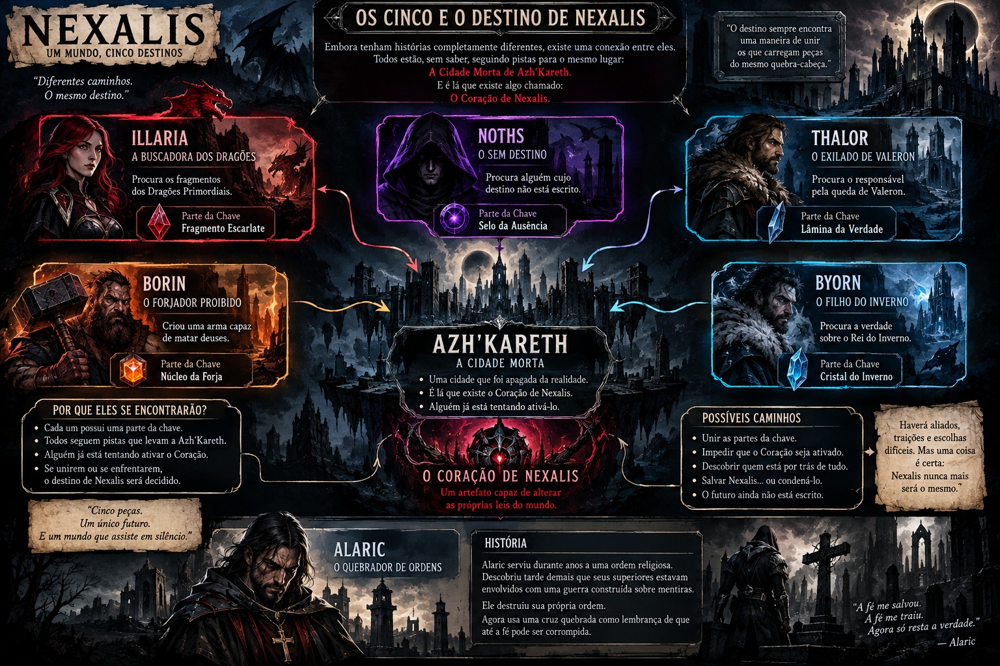

A Buscadora dos Dragões
Illaria
Busca vestígios e fragmentos ligados aos Dragões Primordiais. Sua presença costuma acompanhar descobertas antigas e perigosas.
Aqui ficam apenas os personagens criados para a campanha e que podem ser consultados pelos jogadores. NPCs genéricos, fichas de mestre e informações secretas não aparecem nesta área.

Busca vestígios e fragmentos ligados aos Dragões Primordiais. Sua presença costuma acompanhar descobertas antigas e perigosas.

Foi marcado pelo Véu e perdeu parte de sua existência. Consegue perceber espíritos, maldições e rachaduras além da realidade comum.

Preso além do Véu, ainda encontra maneiras de observar o mundo dos vivos e deixar sinais para quem consegue percebê-los.

Carrega as marcas da queda de Valeron. Procura entender quem foi responsável pelo que aconteceu e por que.

Ferreiro excepcional ligado a conhecimentos de forja que poucos ousariam usar. Seu martelo é tão famoso quanto suas criações.

Um viajante moldado pelo frio que segue pistas sobre o Rei do Inverno e os segredos do norte.

Antigo cavaleiro de uma ordem corrompida. Hoje protege os vulneráveis e carrega a cruz partida como lembrança de sua ruptura.
Selecione uma imagem para abrir a arte completa.